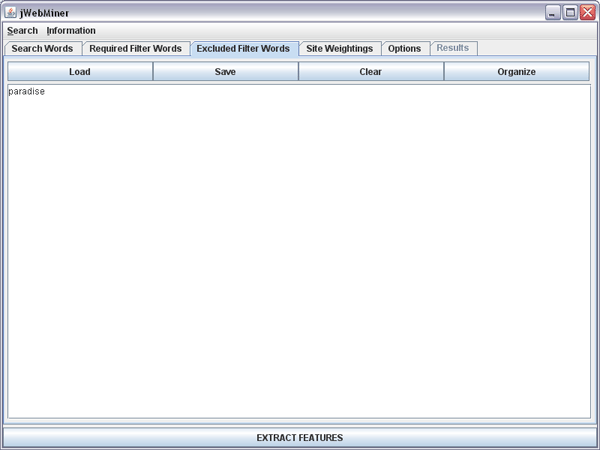

| Excluded Filter Words Panel |
|---|
The Excluded Filter Words Panel is a GUI panel allowing users to enter strings that must not be found on a site in order for it to be counted as a hit during feature extraction. These excluded filter strings apply to all searches. A screenshot of this panel is shown in Figure 1 with one filter string entered.
Excluded filter strings are useful in eliminating hits that are not relevant to the particular topic for which cultural features are being extracted. For example, it may be desirable to exclude the string "construction" in order to avoid hits from queries involving search strings such as "The Doors" and "heavy metal" that are not relevant to music.
Filter words entered in this panel play the opposite role of filter words entered in the Required Filters Words Panel. Note that only basic filter strings are permitted in the Excluded Filter Words Panel, however, unlike the Required Filters Words Panel, where pattern-based filter strings are also permitted.
Note that excluded filter strings are treated literally in queries regardless of the setting of the Treat search strings literally option in the Options Panel. This means that all of the words in a filter string must appear on a site in the same order as they appear in the filter string for the site to be excluded from being a hit because of the filter string. For this reason it is unwise to use long filter strings that may disqualify many relevant sites.
Choosing excluded filter strings involves carefully striking a balance between eliminating as many irrelevant hits as possible and including as many relevant hits as possible. For example, it may be useful to use "paradise" as an excluded filter string, as in Figure 1, if a band such as "Nirvana" is a search string, as in the examples in the Search Words Panel. However, this would be an unwise excluded filter string if the band "The Sabres of Paradise" is also one of the search strings. In general, too many filter words or filter words that are too limiting will have a negative impact on feature values.
.
Figure 1: A screenshot of the Excluded Filter Words Panel with one filter string entered.
The Text Area
The text area dominating this panel allows users to enter the filter terms that they wish to use. These may be entered by directly typing in or editing the text area or by copying and pasting existing text into it. Text may also be added using the Load button, which parses strings from an existing text file and appends them to the text area.
Note that each filter string may contain multiple words and that each line corresponds to a separate filter string.
Note that when a feature extraction is executed with the EXTRACT FEATURES button that the contents of the text field are pre-processed before being used in queries such that blank lines are removed, duplicate lines are removed and the contents are sorted alphabetically by line.
Buttons Above the Text Area
The Load button allows users to parse the contents of a text file and append them to the existing content of the text area (existing contents are not replaced). Each line in the text file is treated as a separate filter string.
The Save button will bring up a file chooser allowing users to enter a file path. The contents of the text area will be saved as a text file to the chosen location.
The Clear button erases all of the contents of the text area.
The Organize buttons causes the contents of the text area to be sorted alphabetically by line, with empty lines and duplicate lines removed.